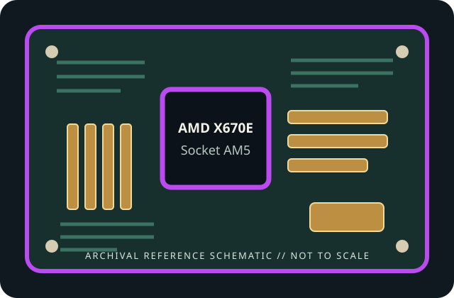

[ INDIVIDUAL COMPONENT // MOTHERBOARDS ]
ASUS ROG Crosshair X670E Extreme
AMD X670E Socket AM5 2022 enthusiast desktop board. This static record describes this exact model and revision only; confirm the printed PCB identity and use the cited manufacturer's support files.

REVISION / FIRMWARE WARNING: Similar model names, PCB revisions and regional SKUs may differ in connectors, radio hardware and firmware. Identify the exact board printed on the PCB before selecting a BIOS.
Specifications
| Exact model / generation | ASUS ROG Crosshair X670E Extreme — 2022 enthusiast desktop board |
|---|---|
| Chipset | AMD X670E |
| CPU socket / support | Socket AM5; processor families and minimum BIOS are limited to the exact manufacturer CPU support list. |
| Form factor | E-ATX, 305 × 277 mm |
| Memory support | Four dual-channel DDR5 DIMM slots; up to 128 GB per ASUS specification, with supported rates dependent on CPU, BIOS and memory QVL. EXPO/overclock profiles are not guaranteed defaults. DDR4 is not supported. |
| PCI Express expansion | Two CPU-connected PCIe 5.0 x16 SafeSlots (x16 or x8/x8) and one chipset-connected PCIe 4.0 x16-length slot operating at x4. |
| Storage | Five M.2 sockets: two onboard PCIe 5.0 x4, one onboard PCIe 4.0 x4/SATA, and two PCIe 5.0 x4 sockets on the bundled ROG GEN-Z.2 card; four SATA 6 Gb/s ports. |
| Rear I/O and network | Dual USB4 Type-C (40 Gb/s), additional USB Type-A/Type-C, HDMI, 10GbE and 2.5GbE LAN, Wi-Fi 6E antenna, audio and BIOS FlashBack. Display output behavior depends on the installed AM5 processor. |
| BIOS / manufacturer support | ASUS UEFI and BIOS FlashBack; the board support page lists BIOS releases, CPU support and manuals. Verify the BIOS required for the exact Ryzen 7000/8000/9000-series processor and observe update instructions. |
Compatibility and installation notes
AM5 uses LGA socket contacts and DDR5 only; protect the exposed socket from damage. The E-ATX board is wider than standard ATX, so verify chassis clearance. Confirm M.2 expansion-card fit, CPU lane sharing, cooler mount compatibility, CPU list and memory QVL.
Before assembly, confirm board revision, chassis dimensions/standoffs, CPU cooler mount and power leads in the manual. Never infer processor compatibility from the physical socket alone. For memory, follow the documented population order and consult the exact board's QVL; EXPO/XMP and other overclocked speeds are not guaranteed.
Read the lane-sharing tables before installing expansion cards and drives. Observe ESD precautions, protect socket contacts, and record the installed BIOS revision and any update history.
Preservation and service
Inspect the socket, DIMM slots, power connectors, M.2 thermal hardware and capacitors before use. Record PCB revision and serial/date codes, document repairs and test conditions, and retain model-matched manual and firmware files. Do not cross-flash firmware from a similarly named board.
Manufacturer sources
- ASUS ROG Crosshair X670E Extreme specificationsOfficial manufacturer documentation for this exact board; confirm current specifications and regional/revision-specific support.
- ASUS ROG Crosshair X670E Extreme manuals, BIOS and CPU supportOfficial manufacturer documentation for this exact board; confirm current specifications and regional/revision-specific support.
Specification summary is static; manufacturer documentation and support lists for the physical revision are authoritative.